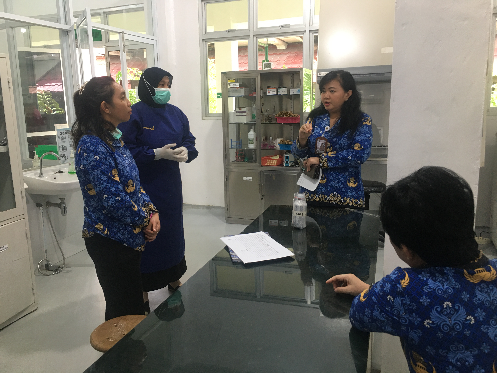

Kesehatan Masyarakat
Mikrobiologi Kesehatan Masyarakat
Pengujian kualitas air, udara, tanah, pangan, serta alat makan dan linen untuk mendukung surveilans kesehatan lingkungan dan pencegahan penyakit berbasis laboratorium.
Daftar Kemampuan Pengujian
Parameter mikrobiologi sesuai kelompok sampel.
| No | Kelompok Sampel — Parameter | Tarif |
|---|---|---|
| Air Minum | ||
| 1 | Total Coliform* | Rp 180.000 |
| 2 | Escherichia Coli* | Rp 180.000 |
| Air SPA / Kolam Renang | ||
| 3 | HPC/TPC | Rp 150.000 |
| 4 | Pseudomonas Aerogenosa / Legionella spp / Staphylococcus aureus | Rp 180.000 |
| Air Pemandian Umum | ||
| 5 | Enterococci / Escherichia Coli* | Rp 180.000 |
| Air Limbah / Sungai / Danau / Laut | ||
| 6 | MPN Coliform* / MPN Fecal Coli* (Limbah Domestik Rp 400.000, Sungai/Danau/Laut Rp 300.000) | Rp 300.000 - 400.000 |
| Udara & Tanah | ||
| 7 | Kualitas Udara Mikrobiologi | Rp 150.000 |
| 8 | Media Tanah - MPN E coli / Fecal Coli / Ascaris / Taenia | Rp 50.000 - 300.000 |
| Makanan & Minuman | ||
| 9 | E coli / Salmonella sp / Staphylococcus aureus / Bacillus cereus / Listeria | Rp 180.000 - 300.000 |
| Alat Makan & Linen | ||
| 10 | Angka Kuman (TPC) | Rp 150.000 |
| Parameter Lainnya | ||
| 11 | MPN Coliform/Fecal/E.coli, Total Coliform/Fecal/E.coli, TPC, Salmonella, Staphylococcus, Bacillus, Klebsiella, Vibrio, Pseudomonas, Shigella, Streptococcus | Rp 150.000 - 275.000 |
Uji lengkap tersedia di Simulasi Tarif → Lab Mikrobiologi Kesmas.